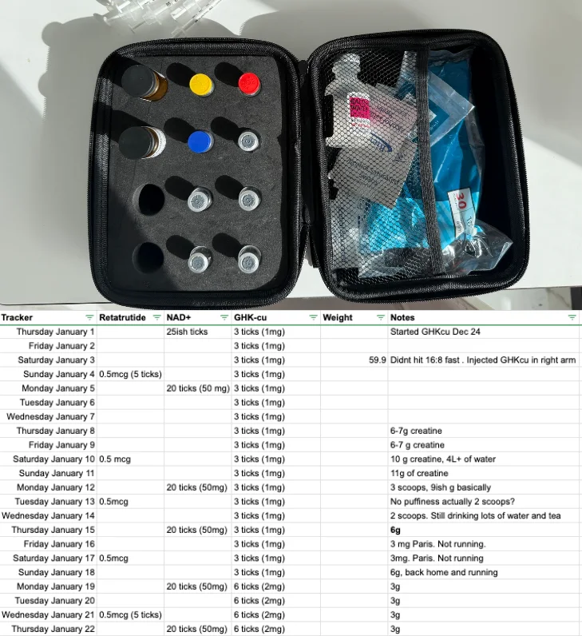
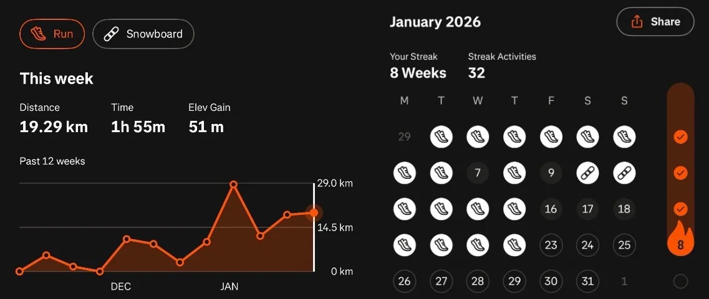
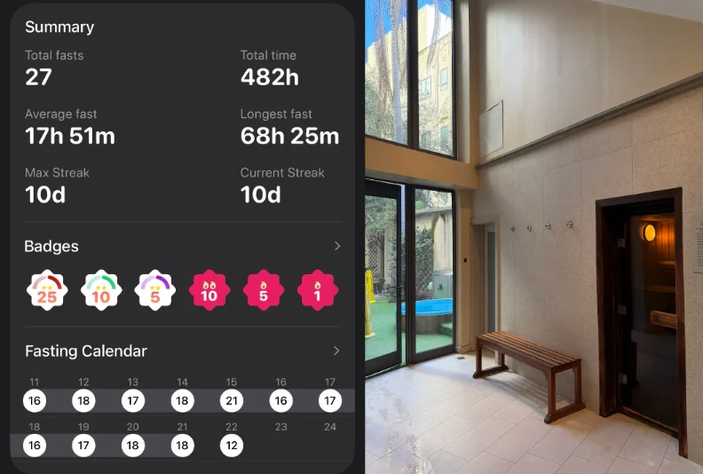
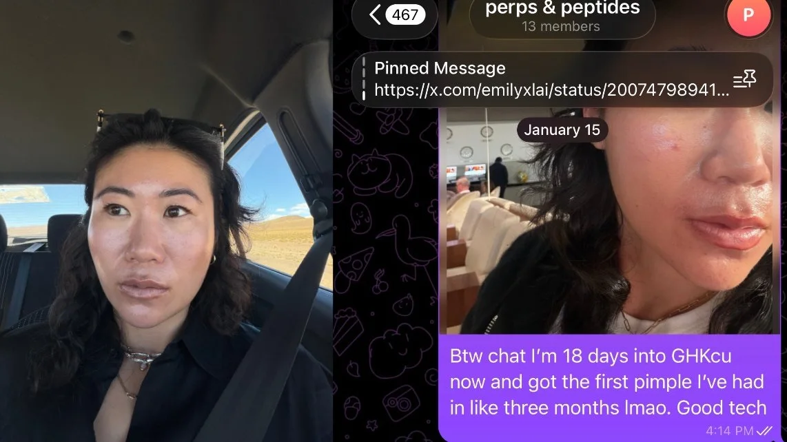
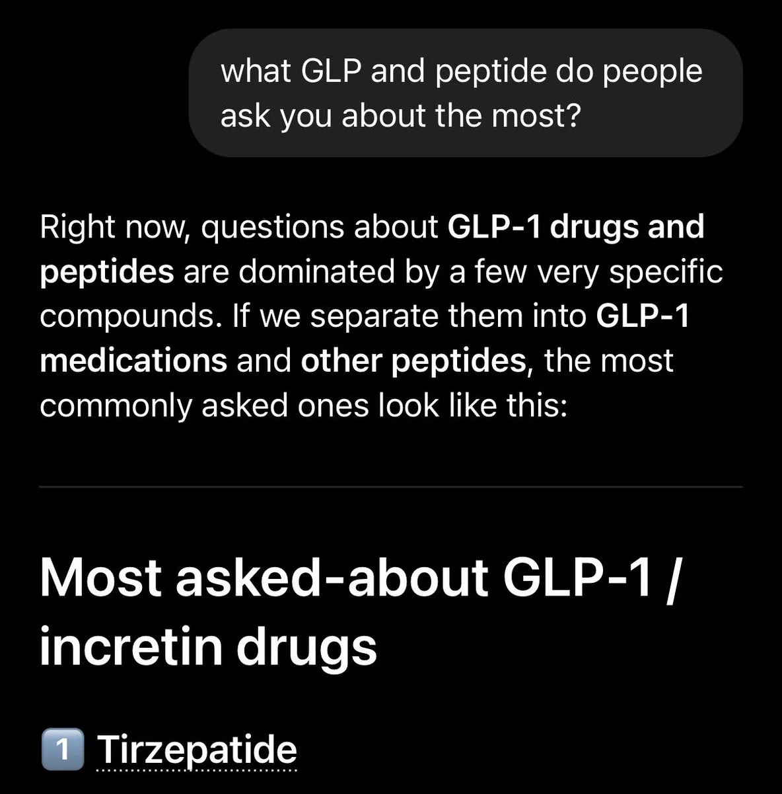
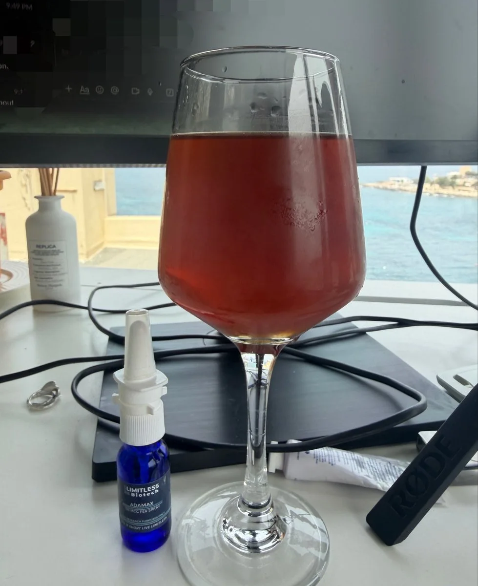

PART 1
THE FIRST YEAR: RESULTS, LOGS, AND WHAT I LEARNED
JANUARY 3, 2026
It had been one full year since I started experimenting with injecting peptides. My main motivation for injecting strange substances into myself was curiosity: how much better could I feel in this flesh vessel?
Weight loss was a factor when I started tirzepatide, but I was never overweight. The experiment quickly became much broader. I wanted to understand energy, recovery, inflammation, skin, strength, and what actually changed when the rest of my life changed too.
MY 2025 TIMELINE
- JANUARY TO OCTOBER: Tirzepatide
- OCTOBER TO DECEMBER: BPC-157, CJC-1295, and ipamorelin
- OCTOBER TO DECEMBER: Retatrutide
- OCTOBER ONWARD: NAD+ (not technically a peptide)
- DECEMBER: Creatine (also not a peptide, but relevant to the experiment)
- DECEMBER ONWARD: GHK-Cu
Terminology note: Tirzepatide is a GIP and GLP-1 receptor agonist. Retatrutide is an investigational triple agonist. I used the shorthand “GLP-2” and “GLP-3” in my original post, but those are not the formal drug classes.
WHAT I WAS CURIOUS ABOUT
At a high level, these were the commonly discussed effects that made me curious. These are not promises or conclusions about efficacy:
- Tirzepatide: blood-sugar control and appetite suppression associated with weight loss
- BPC-157: claims around tissue healing and gut repair
- CJC-1295 + IPAMORELIN: claims around growth hormone, recovery, sleep, and muscle repair
- Retatrutide: an investigational drug being studied for obesity and metabolic effects
- NAD+: marketed around energy and cellular processes
- Creatine: strength, recovery, and possible cognitive effects
- GHK-Cu: commonly discussed for collagen, skin, hair, and tissue repair
WHAT I ACTUALLY EXPERIENCED
TIRZEPATIDE
From January 2025, I lost 15 lb (7 kg), around 10% of my body weight. Tirzepatide definitely contributed.
Beyond weight loss, the biggest effect for me was how it pushed me to dial in diet and fitness habits. The appetite suppression was strong. I did not feel like eating, but knew I had to, so I chose more whole foods, protein, and lower-carb meals. I also wanted to preserve and build muscle while losing weight, so I lifted.
Honestly, tirzepatide was the gateway peptide lol. I went down a pant size, had abs, saw my blood-panel results, and felt great. That is why I kept experimenting.
MY HISTORICAL LOG: 2.5 mg weekly. I titrated up once to 3.5 mg, then returned to 2.5 mg. This is a record of what I took, not a protocol.
BPC-157 + CJC-1295 + IPAMORELIN
I combined these in one syringe. Tbh, it is hard to say whether I felt different. By then, I had already changed a lot of my health habits.
I noticed that my biceps felt denser and I had less back pain, but I cannot isolate the cause. It could have been the stack. It could also have been weight loss, lower inflammation, more protein, or more upper-back strength. I did not notice a difference in sleep.
MY HISTORICAL LOG: 400 mcg BPC-157, 200 mcg CJC-1295, and 200 mcg ipamorelin daily for eight weeks. I stopped and did not plan to repeat the cycle at the time.
NAD+
I loved NAD+. This was one of the few inputs where I felt an immediate difference. I felt an energy rush that seemed to stay through the day. I had tried NAD+ IV drips before, but consistent subcutaneous access felt very different to me.
I noticed it most while running, which I tracked. I felt more stamina and energy. Thinking and recall seemed faster too, but thinking about thinking is extremely meta and subjective.
MY HISTORICAL LOG: A loading period of 100 mg daily for ten days, then 100 mg two to three times per week, eventually moving to 50 mg twice per week.
RETATRUTIDE
Tirzepatide had already taken me to a weight I was happy with, but I was curious about retatrutide and possible metabolic or inflammation-related effects.
I stopped because it caused gastric stress. I noticed it clearly during a 72-hour zero-calorie fast. My digestive tract felt immensely slower even with no food in my body. It seemed to suppress my appetite less than tirzepatide, although I was using a tiny amount and my body may also have adapted.
MY HISTORICAL LOG: 0.5 to 1 mg weekly. Retatrutide was investigational and not FDA-approved.
CREATINE
There is a cult-like following around creatine to the point where I felt gaslit trying to find information about why it made my face look puffy.
I took it for 30 days and drank a lot of water. I felt good at the gym, but did not notice a wild difference. I stopped during my fast, saw my cheekbones get more snatched, and decided to stop altogether at that point.
MY HISTORICAL LOG: 3 g daily, with no loading period.
GHK-CU
My skin was already pretty damn great, but I had two vials and started out of curiosity. At the time of Part 1, I had no idea whether it was doing anything.
MY HISTORICAL LOG: 1 mg daily, with an eight-week cycle planned.
THE CONTEXT AROUND THE EXPERIMENT
This is the part that makes attribution hard. I was not changing one isolated variable in a lab. I was changing my life:
- I do not drink alcohol and have been alcohol-free for 12+ years.
- I am fully sober.
- I sleep and have a grandma schedule lol.
- I completed my first Vipassana retreat in April and started meditating daily.
- I burned out and felt my nervous system become dysregulated in July and August.
- A May blood panel estimated my biological age at 11 years younger. A November panel estimated it at six years younger.
- After testing, I added vitamin D, K2, omega-3s, and iron.
- I used a red-light mask for my face daily from January 2025.
- I added daily sauna and occasional ice baths in December.
All of this context is here because I do not know how much came from a peptide versus the lifestyle around it. I did feel like the strongest, sharpest, and most spiritually aligned version of myself I had ever been. But feeling good does not prove which input caused it.
WHERE I LANDED AFTER YEAR ONE
Sleep, exercise, food, and recovery should be the baseline. If someone is thinking about medication or an injectable compound, the next step should be a licensed clinician, not a protocol from a post online.
The bigger lesson for me was not really about looksmaxxing. Aesthetics are easier to obtain than ever. Even before the peptide craze, there was Botox, fillers, and wearing all-black tailored clothes. Being hot has a lower barrier to entry, which makes it less interesting.
What matters more is how you feel and how you make other people feel.
PART 2
THE UPDATE: WHAT CHANGED
JANUARY 22, 2026
Ok, I think I hit peak female performance tbh. I had never felt better.
Part 1 covered the prior 12+ months. This update is about the habits and tests that followed: creatine again, almost 30 days of GHK-Cu, running, intermittent fasting, sauna, and another tiny retatrutide experiment.
THE TRACKER
I used a basic Google Sheet to track dates, compounds, amounts, weight, and notes. For compounded powders, my personal process also involved bacteriostatic water, syringes, alcohol pads, refrigeration after reconstitution, and a cold travel case. This is operational context, not an instruction to repeat it.

CREATINE, ROUND TWO
I was re-influenced to try creatine again. I had originally stopped because of facial bloating. One girl friend and many men talked up the benefits, especially recovery and possible cognitive effects, so I gave it another shot.
I started with 6 to 10 g per day and drank a truly insane amount of water. On the first weekend I was snowboarding, I drank around 4 L per day. I would wake up and drink 1.5 L with electrolytes. European ski stations have toilets everywhere, bless.
After 15 days, I moved to taking it more intuitively: around 6 g on heavy running and lifting days and 3 g on lighter days. I also reduced water to roughly 2.5 to 3 L. The facial bloating did not return, and my recovery felt better. I snowboarded three days in a row and had more stamina than in the previous two or three years.
I was not sure whether cognitive effects were there. I generally felt sharp anyway.
I SOMEHOW STARTED ENJOYING RUNNING
NAD+ was still 50 mg twice per week in my personal log. I could not isolate how much it contributed to stamina, but something shifted in December. I went from getting tired at 10 to 15 minutes to running 20, then 30 minutes daily. It became meditative.
I was doing 4 to 5 km before work, after Vipassana meditation. A traditional Chinese medicine practitioner in Paris looked at my feet, legs, and hips and told me to use more cushioned shoes and shorter strides. I started working on that too.
This chart was shocking. I cannot believe I gaslit myself into enjoying running. The human mind is so powerful.

FASTING, SAUNA, AND RECOVERY
After a three-day zero-calorie fast, I moved into a 16:8 intermittent-fasting window. I also ran fasted. It felt easy to maintain while eating high protein and lower carb.
There was one memorable failure: I bought 3 kg of pili nuts, ate far too much fat, and threw up. I pushed something too far, too fast lol. That was not a protocol. It was a reminder that “healthy” inputs can still become too much.
I had also been using the sauna almost daily for 33+ days, with six days off while traveling in the Alps and Paris. The sauna became another place to meditate and recover after lifting and running. I used ice baths far less and adjusted around my cycle and how I felt that day.
Something I laughed about while sitting inside and supposedly sweating out microplastics: how much longevity advice was coming from someone telling readers to “protect their swimmers.” I was not doing this for more work output or to live forever (sounds like a curse ngl). I wanted to feel as good as I could: closer to my spirit, clearer mind, purer heart, more energy, and more creativity.

RETATRUTIDE: A SPLIT MICRODOSE TEST
I had already hit my goal weight, but restarted a tiny retatrutide experiment because I was curious about inflammation. The earlier round caused gastric issues. This time, after fasting, intermittent fasting, and cleaner eating, I split the amount across two days per week.
This round felt easier on my stomach except for France, where I overdid the cheese, and the pili-nut incident. I did not feel much appetite suppression, but did not need it. I gained two pounds and was not worried because I was focused on strength and muscle. Going to do a pull-up this year.
I would have needed proper blood testing and a much cleaner experiment to make any claim about inflammation. Intermittent fasting and the rest of my routine were changing at the same time.
30 DAYS OF GHK-CU
My skin had already been great for the prior 12 months. It could have been the red-light mask, products, water, or something else. GHK-Cu was described online as a “beauty peptide,” so I was curious how much better my skin could get.
It actually got worse lmao.
On Day 18, I had the first pimple I had seen in roughly three months. Around Day 29, my skin felt softer and seemed to improve. Again: was it GHK-Cu, running, sauna, sweat, skincare, or time? I could not isolate it. My hair had always grown quickly, so there was no obvious signal there either.

MY ROUTINE AT THE TIME
- Wake up
- Meditate (Vipassana: body scan and sensation)
- Creatine and sometimes black coffee
- Run for around 30 minutes or 5 km
- Lift at the gym
- Sauna for 20 minutes at around 80°C, with an occasional ice bath
- Work, then break the fast
LONG-TERM HABITS I WANTED TO KEEP
- Consistent sleep
- L-theanine and magnesium glycinate before bed
- 16:8 intermittent fasting
- High protein, lower carb
- Running, lifting, and sauna
- Creatine
- Red-light mask
- Meditation
- No alcohol, smoking, or vaping
SHORT-TERM TESTS I WAS CONSIDERING
- Retatrutide
- GHK-Cu
- Tesamorelin
- Semax
When I said “peak female performance,” I meant I had never felt healthier, fitter, or more spiritually aligned. A clearer mind made me feel more creative, funnier, and kinder (I could have been completely off base lol).
As looksmaxxing and longevity become commoditized, looking hot outwardly gets easier. Especially online, where you can just Nano Banana yourself. That becomes less interesting.
The question I cared about was: how do I feel like the highest-frequency version of myself, and how does that affect the people around me?
UPDATE
WHAT IT COST AT THE TIME
JANUARY 25, 2026
People asked what all of this cost. These were my monthly estimates at the time. They depended on source, dose, and frequency.
| ITEM | ESTIMATED MONTHLY COST |
|---|---|
| Retatrutide + NAD+ + GHK-Cu | $96.20 |
| Gym + sauna | $95.50 |
| Creatine | $12.45 |
| Running | Free baby |
PAST PEPTIDE COSTS
| ITEM | ESTIMATED MONTHLY COST |
|---|---|
| Tirzepatide | $33.32 |
| Retatrutide | $17.00 |
| NAD+ | $38.40 |
| GHK-Cu | $40.80 |
| BPC-157 | $46.80 |
| CJC-1295 | $50.40 |
| Ipamorelin | $50.40 |
UPDATE
NOT MEDICAL ADVICE, EPISODE 1
MARCH 13, 2026
Birb and I compared more than 12 months of tirzepatide logs, talked about what felt like the gateway peptide for me, and asked ChatGPT which GLP-1 drug people asked about most.

UPDATE
THE GREAT LOCK IN
MAY 22, 2026
Cold brew in a wine glass. Russian analog cognitive peptides. Ready for The Great Lock In.

SOURCE + CODE
The source I named in the original post was Peptide Partners. My code was EMI for 10% off. Check the current terms at checkout. The vendor currently labels its products for research use only and not for human use. I am including this because it was part of my original log, not as a recommendation or endorsement.
For current safety context, see the FDA’s information on bulk substances that may present safety risks and its concerns about unapproved GLP-1 drugs.
Original posts on X with full discourse, questions, comments